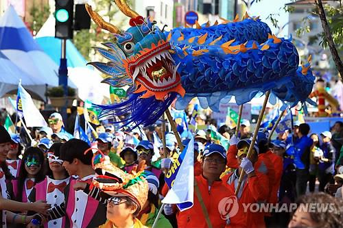
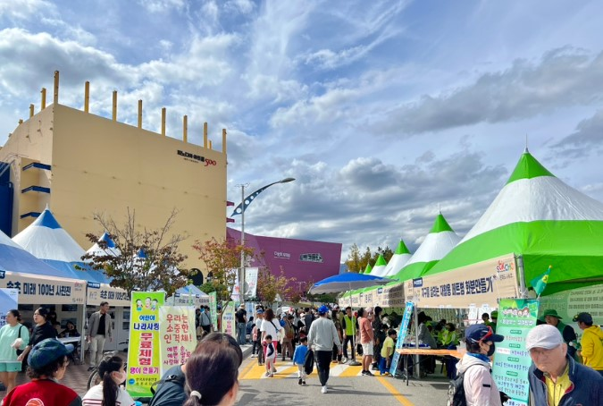
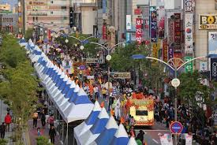

설악문화제는 1966년 설악소사를 중심으로 하는 산악등반 대회 등
제 1회 설악제를 시작으로 뚜렷하고 맑은 산정과 바다 그리고 호수가 있는 속초 및 설악 일대의 아름다운 경치와
설악 지역의 문화를 속초 시민들과 함께 소개하고 만들어나가는 지역 문화축제입니다.
|  |  |  |
|---|---|---|
퍼레이드 |
푸드코트 |
체험행사 |
| 속초 로데오거리에서 행해지는 거리퍼레이드입니다. 속초시의 각 시민단체, 학교 등에서 나와 춤을 춥니다. |
각종 지역 먹거리를 판매하며 준비된 포장마차 내부에서 시식 가능합니다. |
|